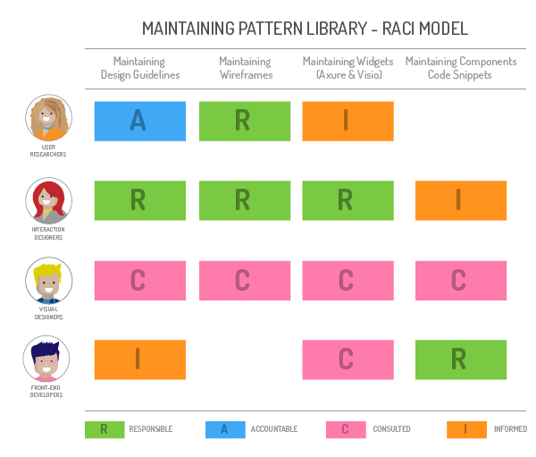

The client’s desired a standard look-and-feel across all desktop web applications within their Business Insurance division. The agreed design patterns, themes, and procedures would then be reused across their Personal Insurance and E-business division; eventually extending into mobile web and native applications. The deliverable aspired to ensure designers no longer worked out of sync, reduced misunderstands between designers and front-end developers, and eliminated duplicated work

Wrote UI Guidelines illustrating components name, definition, visuals, usage reasoning, and exceptions

Helped establish a naming standard using Scalable and Modular Architecture for CSS (SMACCS) conventions for Visio, Axure, and CSS components

Defined procedures for designers and researchers to update and deviate from the Pattern Library
Designer and Researchers want to build experiences with tested and approved patterns. Front-end Developes, on the converse, want scalable procedures to ensure code remains modular and reusable. Thus, crafting the Pattern Library required on undering each team’s workflow and overlaps
While working with stakeholders from each UX team to define our Pattern Library’s roadmap, we agreed each pattern would contain a definition, wireframe example, description, usage guidelines, and reasoning for possible deviation in our first release. In addition, every component would live within a stencil library available in Visio and Axure format

After agreeing on the Pattern Library’s roadmap and types of content , we worked towards identifying common components across all applications. This phase helped prioritize content development strategy, as well as identify interaction consistencies across our platforms. We quickly discovered lightboxes, for example, closed differently across several applications

As our library filled with component guidelines and reusable Visio and Axure widgets, our attention shifted towards release two; containing patterns built out in code. To do this, we developed a scalable and flexible SMACCS architecture, and made sure that the HTML was well-structure and semantic

The library’s integration into the UX team’s workflow brought additional request to standardize content upkeep procedures. The process ensured designers and researchers could revise the Pattern Library as styling, interactions, and technology capabilities evolved
